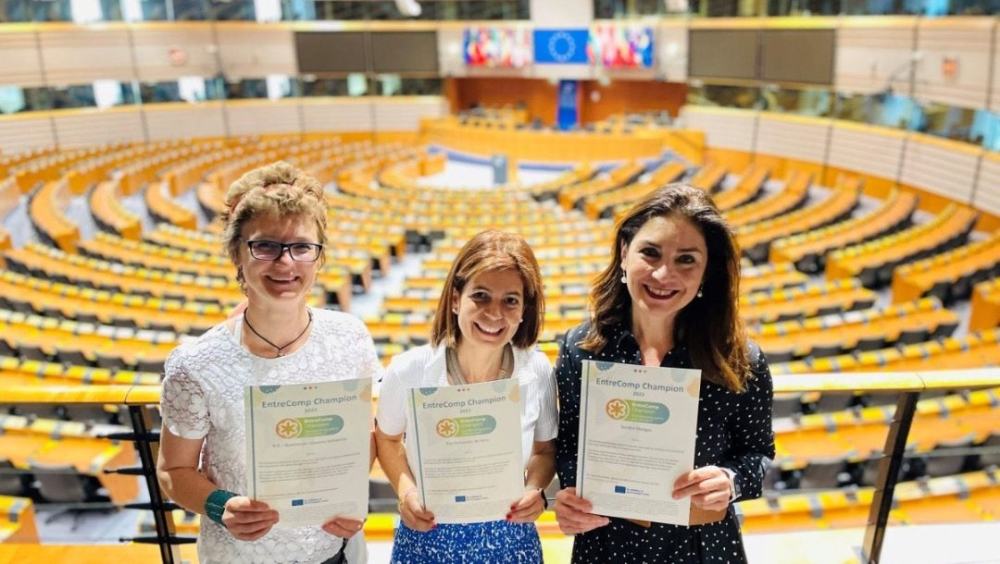

Una pequeña historia de transformación y empoderamiento. Conocí el marco europeo EntreComp a principios de 2021, cuando la European Training Foundation nos invitó a una conferencia internacional de la red de centros de excelencia. Allí coincidí con Elin McCallum, de Bantani Education, cuyas palabras sobre los centros de excelencia en emprendimiento y el curso EntreCompEdu resonaron en mí.
En aquel momento llevaba ocho años usando la simulación como metodología principal para formar a mi alumnado, lo que me permitía cubrir los contenidos del ciclo de Administración y Finanzas y, además, ayudarles a desarrollar las llamadas soft skills, tan demandadas en el mercado laboral y tan necesarias en la vida.
Me embarqué en el curso de EntreCompEdu sobre el marco EntreComp y, más allá del contenido, lo que me cautivó fue el proceso de reflexión personal y docente que desencadenó. Al estudiar el marco en profundidad y relacionarme con una comunidad internacional de profesores sentí que había encontrado mi hogar: reconocí muchas competencias que ya trabajaba con mi alumnado y descubrí otras nuevas en las que aún tenía margen de mejora.
Trabajar con una metodología activa nos había permitido, tanto a mi alumnado como a mí, desarrollar y fortalecer esas competencias. Descubrí mi propia creatividad en un entorno que exigía soluciones innovadoras y, aunque soy reacia al cambio y al riesgo, mejoré en la gestión de la incertidumbre al enfrentarme a diario a lo desconocido: en una empresa simulada que opera a nivel internacional nunca sabíamos cuántos pedidos llegarían, qué errores cometeríamos o qué retos habría. A pesar de mis muchas inseguridades, gracias a la simulación y a EntreComp pude superarlas y darme cuenta de mi valor.
También reflexioné sobre el impacto del proyecto en mi alumnado. A lo largo de los años he visto cómo estudiantes que en entornos tradicionales no destacaban brillaban con luz propia con estas metodologías: detectaban oportunidades para crear valor, mostraban gran creatividad, sabían conseguir los recursos necesarios o aprendían a través de la experiencia. Pudieron conocerse mejor, identificar sus fortalezas y debilidades y darse cuenta de su propio valor, a veces por primera vez en toda su vida educativa.
Desde entonces he luchado por mejorar mi metodología para guiar a mi alumnado en el descubrimiento de sus competencias emprendedoras, incorporando el pensamiento ético y sostenible y creando, a partir de las rúbricas del marco, una herramienta que les ayude —y a otros profesores— a conocerse mejor y reflexionar sobre sus competencias.
EntreComp ayuda a las personas a reconocer su propio valor y su capacidad para actuar y cambiar las cosas; no hacen falta grandes cambios para mejorar las circunstancias. Desde mi puesto como asesora técnica en la Dirección General de Formación Profesional sigo impulsando este marco: ya como profesora propuse usar EntreComp como referencia al crear las aulas de emprendimiento de Castilla y León e incluirlo en su guía digital, convencida de que puede cambiar la vida de nuestro alumnado.
La semana pasada estuve en Bruselas participando en un proyecto de la Comisión Europea para encontrar herramientas que evidencien y evalúen las competencias emprendedoras. Durante una recepción en el Parlamento Europeo recibí una sorpresa extraordinaria: fui reconocida como EntreComp Champion, un reconocimiento a las prácticas transformadoras en la enseñanza del emprendimiento.

Aunque no me considero una campeona, sí soy una creyente ferviente, y ahora ese reconocimiento está en mi “pared feliz” en el trabajo, porque me recuerda que con mi trabajo puedo mejorar la vida de otras personas.
Felicito también a mis compañeros que recibieron el mismo reconocimiento: Monia Izabela Wiśniewska, de la Asociación Jóvenes Solidarios de Arenas de San Pedro; Paz Fernández de la Vera, del departamento de FOL del IES El Batán de Oviedo; y Roman Shyyan, del Equipo de Apoyo a la Reforma del Ministerio de Educación de Ucrania.